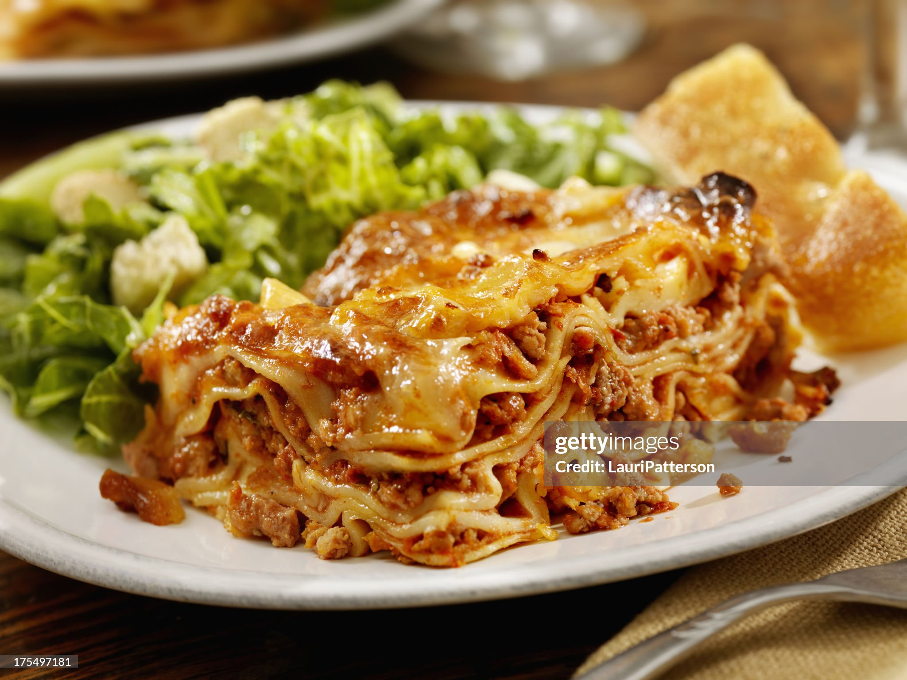

Lasagna

How to make Lasagna
Homemade lasagna may have a few steps, but each step is
easy and I assure you it’s worth the time; the perfect
Italian meal! This is a really easy lasagna recipe.
Ingredient list
- Cheese Filling
- Meat
- Sauce
- Spinach (variation)
Steps to Follow
- Boil pasta: Cook in a large pot of salted water per the recipe below.
- Prepare meat sauce: Cook sausage and beef with onion and garlic.
Drain well, add the pasta sauce & simmer it for a few minutes to thicken.
- Combine cheese mixture: Stir the cheese mixture together in a bowl.
- Layer & bake: Layer the meat sauce and cheese mixture with lasagna noodles
and bake until browned and bubbly.